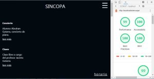
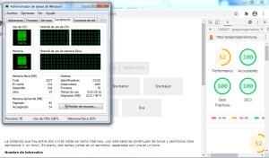

Sincopa
Los colores y el orden de las etiquetas contribuyen con la optimización web
IR A PÁGINALos colores y el orden de las etiquetas contribuyen con la optimización web
IR A PÁGINAEn teoría, javascript bloquea la construcción del DOM, si sabemos que javascript se ejecutará por una acción del usuario, entonces podemos disponer de este.
IR A PÁGINAAl no cumplir las reglas; Los colores, el tamaño de recursos, orden de las etiquetas entre otras, estas perjudican el sitio web.
IR A PÁGINAPerformance 52%, Uso de CPU 100%
